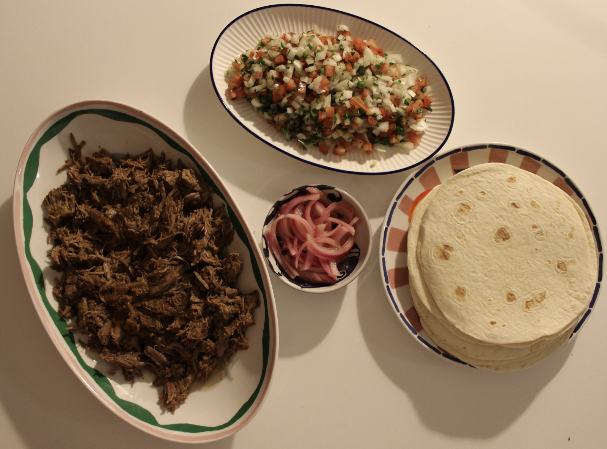

A great slow-cooked meal for a large group — rich chipotle beef that pulls apart and keeps well for taco night or leftovers. Use salsa verde, chipotle, fresh pico, and bright toppings instead of a heavy sauce.
This one is perfect for slow braising, then shredding and serving with all the crunchy, acidic finishes that make tacos feel fresh and vibrant.
It also works well with extra toppings like pickled onion, coriander, avocado, or lime wedges for a crowd-pleasing finish.

4 servings
⏱ 2–3 hrs • 💪 High Protein • 🍽 Base: 4 servings
High iron content from beef supports energy and oxygen transport, while garlic and spices provide anti-inflammatory compounds. Tomato-based pico adds vitamin C to support iron absorption.